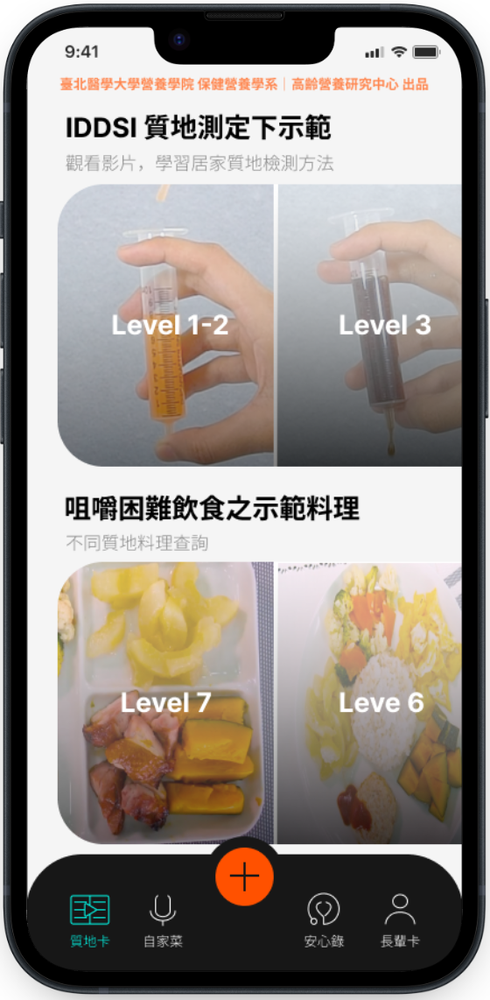
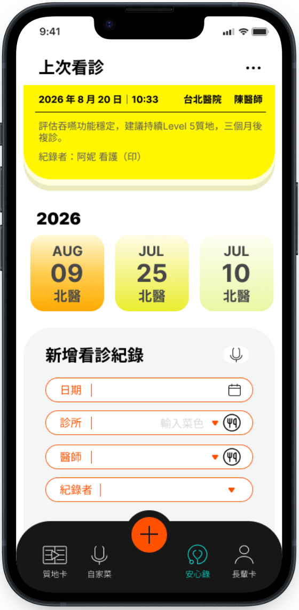

醫院、治療所與長照機構的數位照護夥伴
把院所的專業衛教，
做成照顧者真的會用的 APP
我們從照顧者訪談與臨床流程出發，設計並開發醫療照護 APP。可以直接採用已完成的吞嚥照護 APP「安心呷」換上您的品牌，也可以為您的科別量身打造。


兩種合作方式，依需求選擇
想快速上線，選白牌授權；想解決其他科別的照護問題，選客製化開發。
快速導入
安心呷白牌授權
以已完成、經場域測試的吞嚥照護 APP 為基礎，換上院所的名稱、Logo 與衛教內容，成為院所自己的照護 APP。
- 院所品牌名稱、Logo 與配色
- 放入院所自製的衛教影片與食譜
- 院所專屬 QR Code 衛教單與海報
- 約 4–6 週上線
量身打造
客製化照護 APP 設計開發
針對其他科別或照護情境，從需求訪談、服務設計、介面設計到 APP 開發，一次完成。
- 病人、家屬與醫療人員需求訪談
- 服務流程設計與可點擊原型
- iOS／Android APP 開發與上架
- 場域測試與成效評估
Demo 案例
安心呷：
吞嚥困難長輩的居家飲食照護
語言治療師在診間給的質地建議，家屬回家後常常記不清、做不到。安心呷把 IDDSI 國際吞嚥飲食標準轉成家屬看得懂的影片與料理示範，並讓家屬、看護與治療師共享飲食紀錄。
產學合作示範專案｜合作單位：[學術合作單位，經同意後列出]
照顧者訪談
找出質地調整、醫囑遺忘、多人照顧不一致三大痛點。
專業內容轉譯
與營養及吞嚥照護專業合作，把 IDDSI 分級做成影片與圖像。
高齡友善介面
大字、圖像化、步驟少，外籍看護也能上手。
場域測試
規劃中：將與合作院所進行場域測試，驗證照顧者的使用成效。
質地卡｜學會看質地

自家菜｜記下每一餐

安心錄｜留住醫囑
長輩卡｜全家一起照顧
同樣的方法，也適用這些照護情境
凡是「診間說明、回家執行」的照護，都可能是下一個 APP。
中風後溝通與復健
居家練習影片、家屬溝通技巧與進度紀錄。
兒童語言發展
家長在家執行的語言遊戲與每週回報。
慢性病飲食管理
腎臟病、糖尿病的飲食衛教與紀錄。
出院準備與居家照護
管路照護、傷口照護與回診提醒。
合作流程
白牌授權從步驟 3 開始；客製化開發走完全部四步。
-
1
需求訪談
與醫療團隊、病人及家屬訪談，釐清照護流程中的斷點。
-
2
服務設計與原型
提出服務流程與可點擊原型，與醫療團隊確認內容正確性。
-
3
開發與場域測試
完成 APP 並在院所小規模試用，依回饋修正。
-
4
上線與維運
上架 App Store／Google Play，提供教育訓練與後續維護。
方案與費用
以下為參考價格，實際費用依院所規模與需求報價。
關於團隊
我們以設計為出發點，從照顧者與醫療人員的真實經驗找出問題，再與營養、語言治療等醫療專業合作，把專業衛教轉化成好懂、好用的數位服務。
劉品姸
臺灣科技大學｜設計系
安心呷 設計開發
常見問題
其他問題歡迎在諮詢表單留言。
白牌授權和客製化開發有什麼不同？
白牌授權是把已完成的安心呷換上院所的品牌與衛教內容，上線快、費用低；客製化開發是針對其他科別或照護情境，從頭設計一個新的 APP。
可以先看 Demo 再決定嗎？
可以。我們提供安心呷實機展示，也可安排單一門診免費試用 4 週。
客製化開發大約需要多久？
依功能範圍約 3 到 6 個月，包含需求訪談、服務設計、開發與場域測試。
需要串接醫院的 HIS 或電子病歷嗎？
白牌版本不需要，由家屬自行下載使用。客製化專案若需要串接，可在需求訪談時評估。
這類 APP 算醫療器材嗎？
只做衛教與紀錄、不提供診斷或治療建議的 APP，一般不屬於醫療器材；若功能涉及判讀或治療建議，需依衛福部食藥署規定辦理。我們會在設計階段一併評估。
病人資料的保護與歸屬？
[請填寫資料存放方式、加密、個資法遵循與資料所有權約定]